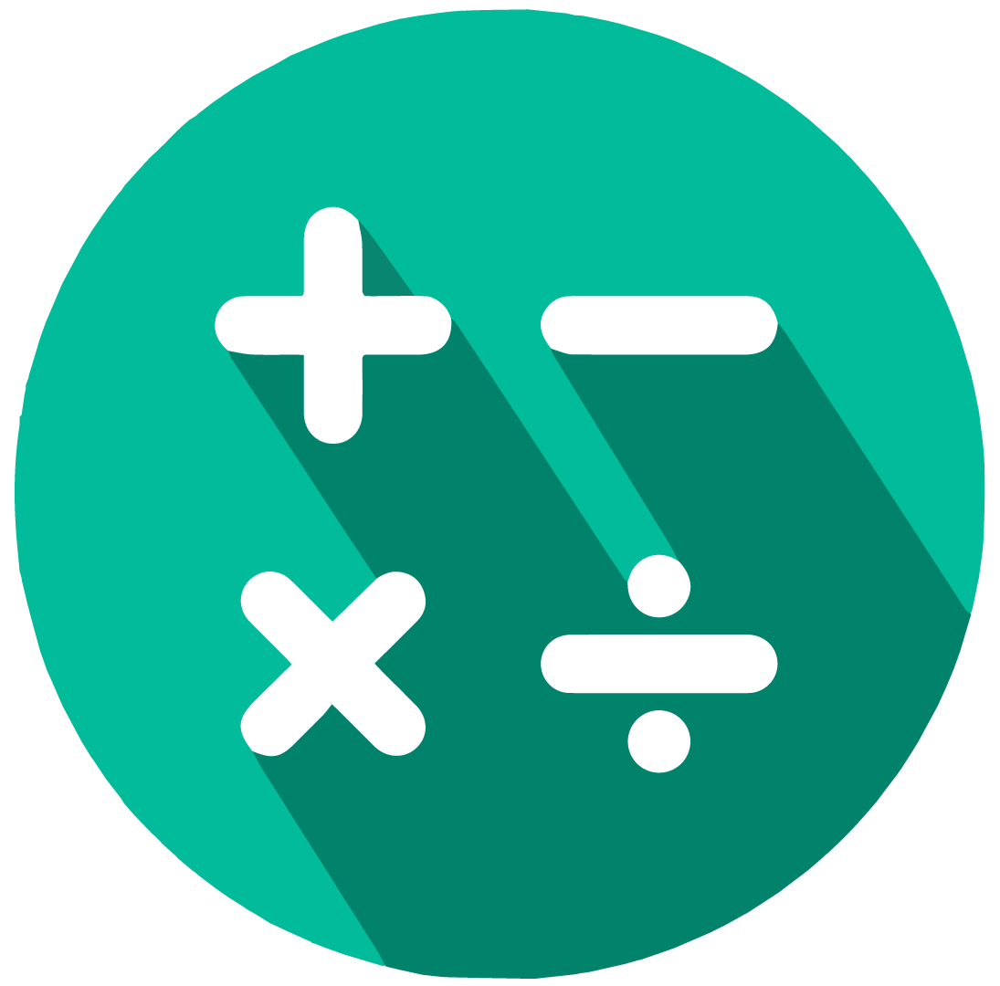

What is Mathematics ?
Mathematics is the science that deals with the logic of shape, quantity and arrangement.
Math is all around us, in everything we do
It is the building block for everything in our daily lives, including mobile devices,
architecture (ancient and modern), art, money, engineering, and even sports.
Since the beginning of recorded history, mathematic discovery has been at the forefront of every
civilized society, and in use in even the most primitive of cultures. The needs of math arose based
on the wants of society. The more complex a society, the more complex the mathematical needs.
Primitive tribes needed little more than the ability to count, but also relied on math to
calculate the position of the sun and the physics of hunting.
History of mathematics
Several civilizations — in China, India, Egypt, Central America and Mesopotamia — contributed
to mathematics as we know it today. The Sumerians were the first people to develop
a counting system. Mathematicians to mathematics as we know it today. The Sumerians
were the first people to develop a counting system. Mathematicians developed arithmetic,
which includes basic operations, multiplication, fractions and square roots. The Sumerians’
system passed through the Akkadian Empire to the Babylonians around 300 B.C. Six hundred
years later, in America, the Mayans developed elaborate calendar systems and were
skilled astronomers. About this time, the concept ofzero was developed.
According to one pure mathematician, pure mathematicians prove theorems, and applied mathematicians
construct theories. Pure and applied are not mutually exclusive, but they are rooted in
different areas of math and problem solving. Though the complex math involved in pure and
applied mathematics is beyond the understanding of most average Americans, the solutions
developed from the processes have affected and improved the lives of all.